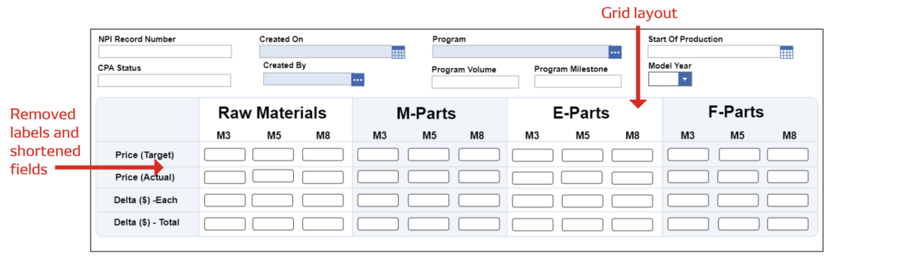
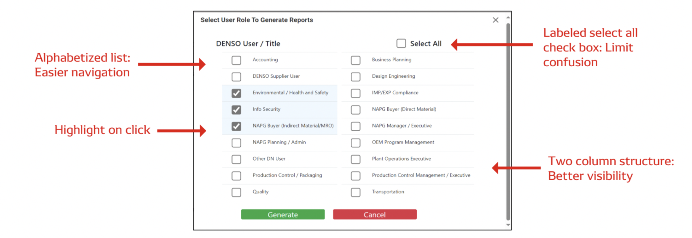

×
DENSO North America 2024 UX/UI Co-op
DENSO is a global company focused on advanced mobility that positively changes how the world moves and contributes
to greater well-being. They are a global Fortune 500 company, with a broad product portfolio and widespread global impact.
DENSO NA Collaboration Center
I became familiar with DENSO’s Product Lifecycle Management (PLM) system, the DENSO NA Collaboration Center (built
upon Aras Innovator) to complete assigned user stories. User stories are a set of requirements to satisfy.
Using Azure DevOps, a Microsoft service to help contributers collaborate on developing software, I developed, designed and
tested two user stories with a focus on form design usability and accessibility.
Refresh Cost Planning Sheet Form
The cost planning sheet form helps DENSO Supplier Portal users organize and calculate costs for different types of parts.
It significantly reduced data entry time per user, with an anticipated user count of
200-300. The final design was presented and approved by DENSO purchasing department to be deployed by the development team.

Tools & Technologies: HTML, CSS, Aras tools
Enhancements to Generate Reports Form
This form is used to generate reports for specified user roles in DENSO NA. I completed various technical requirements such as
adding two user options within the PLM system, alphabetizing the list values and re-designing the form. This reduced look-up time
to create reports and was handed over to the development team for deployment.

Tools & Technologies: HTML, CSS, JavaScript, Aras tools
Sales Portal Testing
I supported the request for qoute (RFQ) feature on the DENSO Sales Portal by conducting testing. I created a series of RFQ's
on the platform and checked whether data was properly being populated across the system. These findings were recorded in Excel.